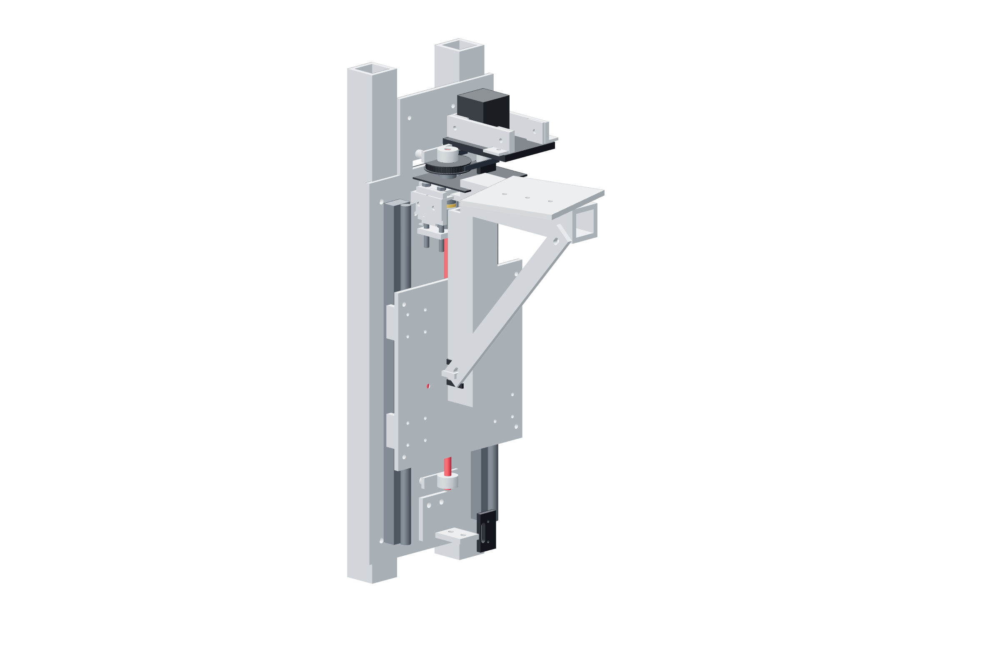

Structure / Z72 / 179
Fit the Z screw drive
The drive cartridge joins the carriage while the fixed-end metal bulkhead takes thrust. The opposite radial bearing leaves the screw axially free.
Add1 prepared 400 mm screw drive · linear-drive-support · opposite KP08 · carriage cartridge fasteners · fixed KP08: 2 M4 × 35 · floating KP08: 2 M4 × 30 / two washers / locking nut
Tools / setup4 mm hex · hand wrenches · support for Z

- Start the metal fixed-end support and bulkhead joints; align the screw with the carriage cartridge.
- Start the cartridge-to-carriage fasteners before seating either joint.
- Install the opposite KP08 on its two nominal 5 mm metal risers, finishing height to the received center. Use M4 × 30 with ≥10 mm OD washers; add no outer axial nut.
- With belt released, hand-turn the screw through the intended travel; seat supports only while the screw remains free.
Ready when
Hand rotation moves the carriage without cocking the cartridge, a tight region or end thrust at the floating bearing. A skewed cartridge or trapped floating end adds unintended load. Re-align its metal joints before fitting or powering the belt.